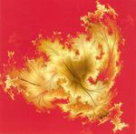

| Artist: | Djam Karet |
| Title: | Recollection Harvest |
| Label: | Cuneiform RUNE 219 |
| Length(s): | 71 minutes |
| Year(s) of release: | 2005 |
| Month of review: | [03/2006] |
| 1) | The March To Sea Of Tranquility | 7.18 |
| 2) | Dr. Money | 7.12 |
| 3) | The Packing House | 11.11 |
| 4) | The Gypsy And The Hegemon | 9.20 |
| 5) | Recollection Harvest | 10.06 |
Indian Summer
| 6) | Indian Summer | 4.10 |
| 7) | Open Roads | 4.57 |
| 8) | The Great Plains Of North Dakota | 3.13 |
| 9) | Dark Oranges | 3.44 |
| 10) | Twilight In Ice Canyon | 5.16 |
| 11) | Requiem | 4.16 |
Samples of Recollection Harvest occur here by kind permission of Cuneiform Records.
Dr. Money continues in a similar vein, in fact, it is audible that these songs belong together. Again, there is plenty of synths making for a relatively melodic type of rock, that stays relatively friendly and accessible. There are some juicy bits of electric guitar, but all laced with Santana style organ. In the middle, the music takes even a bit more gas back, for some Land's End style meandering keyboards. Then a wallowing guitar comes in, almost as if it is drunk. An up-beat track, but again relatively rich in melody and accessible. The music does need to be played loud, or better yet, played live.
Then we move into the relaxingly plucked The Packing House. But the relaxation does not stay, but the meandering guitar is a mean one. The keyboards bring in the melody again, while the bass player adds some very thoughtful lines. Halfway, the music drops out, and we are left with an easy going rhythm section. A bit reggae like even. But then the guitar sets in a with a vengeance. The final part is dark and brims with organ, although there are some angelic keyboards as well.
On The Gypsy And The Hegemon, we are given a treat of pure instrumental prog. It seems that by comparison with previous albums, Djam Karet is more melodic and less edgy, but maybe that is just my recollection. Sure is that on this song, there is a lot of mellow `flute' and guitar. It reminds me of bands like Lady Lake, but with a bit more keyboards. Halfway, the music becomes quite a bit scarier with the guitar taking on a more menacing tone and the Fender Rhodes gurgling along. The rhyhtm guitar brings in a strongly seventies feel, while the keyboards are going all out. We end with sampled voices.
Recollection Harvest closes down the first, longer half. Drum and especially bass are first in the spotlight, even though the guitars add some pretty high pitched notes. After some effects, and the advent of a seventies rhythm guitar, we continue in a stop-and-start game. This is indeed a song full of effects, lots of reverb, and backward playing. Then we come to a quieter phase in which acoustic guitar and percussion are lined by Frippian guitar. Halfway, a plodding rock guitar sets in, after which it starts to meander together with the omnipresent organ. The ends with a vengeance, a powerful climax.
The second album on this cd is Indian Summer. It has more songs, but they are much short, about half the length each. Indian Summer is a bit lighter than what went on heretofore, a bit more atmospheric too. The guitar moves more in Frippian territory, the keyboards are relatively light and repetitive. Open Roads is mainly an acoustic affair, but a rather pacy one. It does have keyboards too, and a nicely bobbing bassline, but on the whole the feel is more percussive, more world like and more improv, than the first three quarters (of an hour).
The Great Plains Of North Dakota is a short dancing piece of jangling guitar, while Dark Oranges is a dark piece of electronics and wailing guitar. Twilight In Ice Canyon is a repetitive piece with plenty of meandering guitar. At some point, the music starts to flow a bit more, something it does less on this second `half'.
Requiem closes down Indian Summer and the album as a whole. It has overall a relatively sad feel. Saying goodbye is hard. The prog synths are back again. A terrific closer, and aptly titled too.